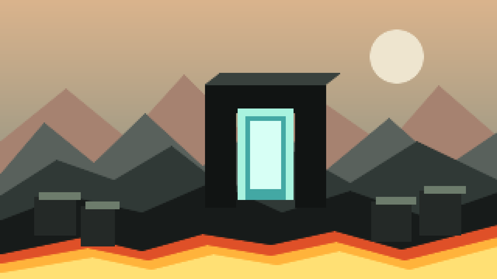
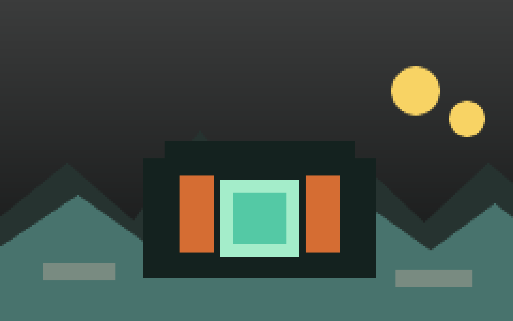
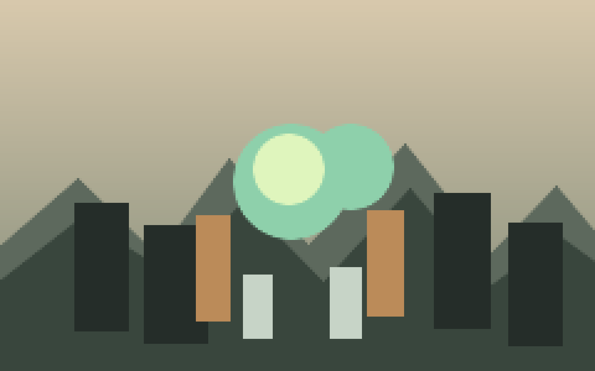
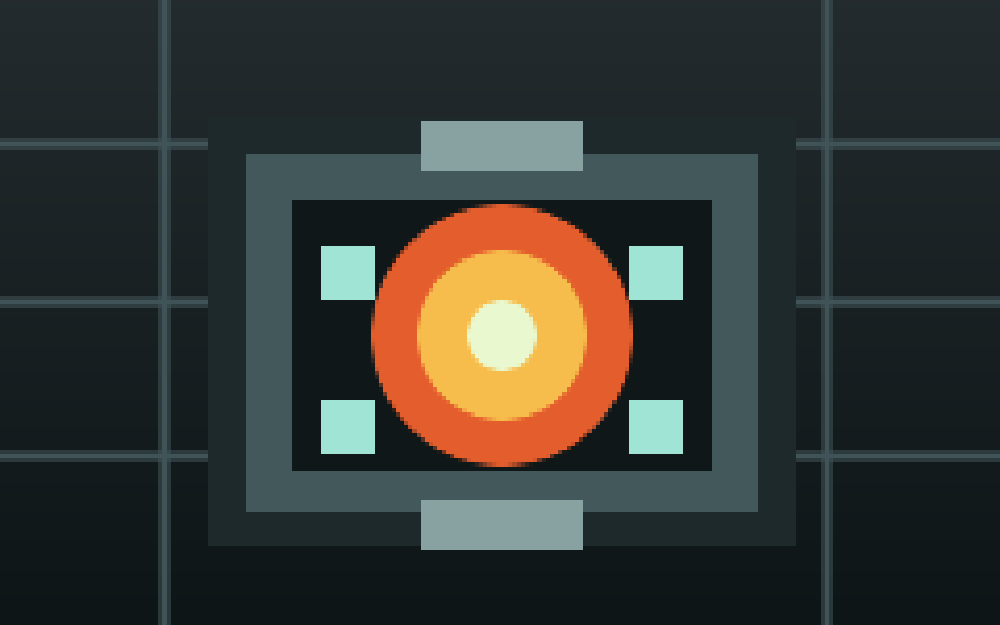
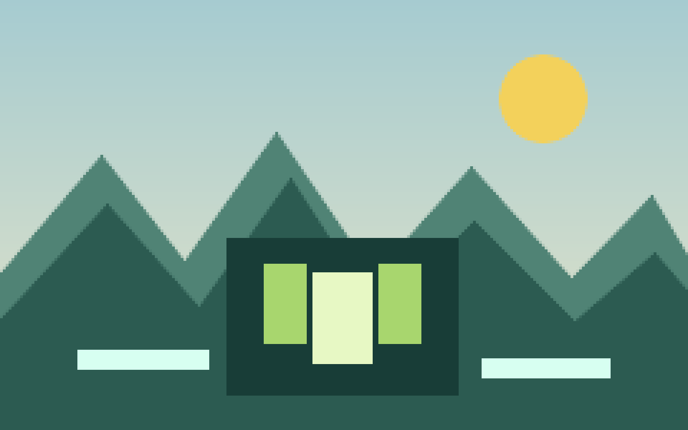

FORGE 1.20.1 / 生存扩展模组
Forever
Advancing
Architecture
00
ASHFALL
持续设计、测试与重建
从深层矿脉到漂浮群岛，从机械工坊到雷暴云层，ASHFALL 正在构建一个更有回应的世界。每一种资源、每一套系统、每一次选择，都拥有真正的重量。
01
更新 / News
ASHFALL 的
最新动态
从版本发布、开发日志到社区合作，每一次更新都让这个世界更完整。
01/16
02
系统 / Expertise
探索完整的
生存系统
从一株会随季节改变的植物，到横跨整个维度的能源网络。每个系统都独立成立，也彼此影响。

ASHFALL / WORLD SYSTEMS


